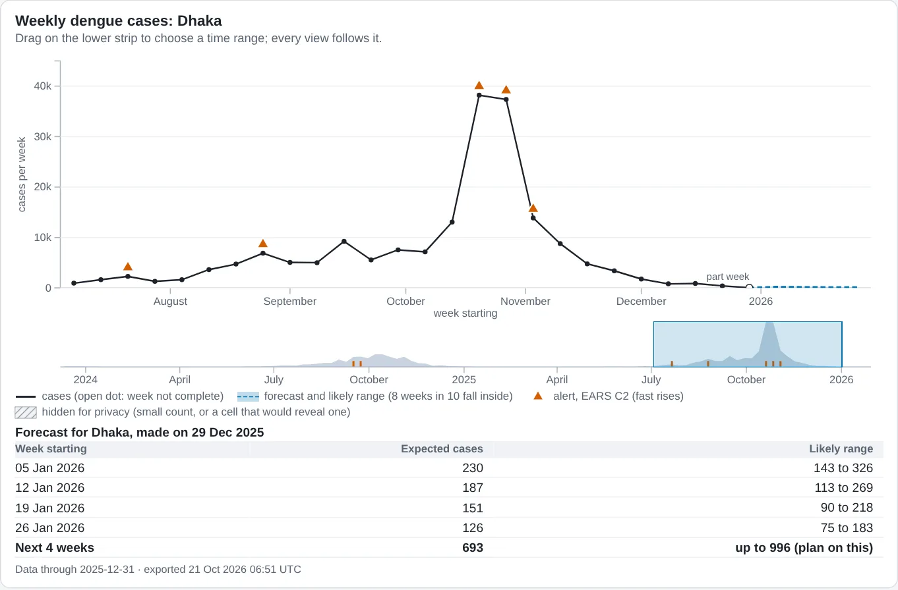
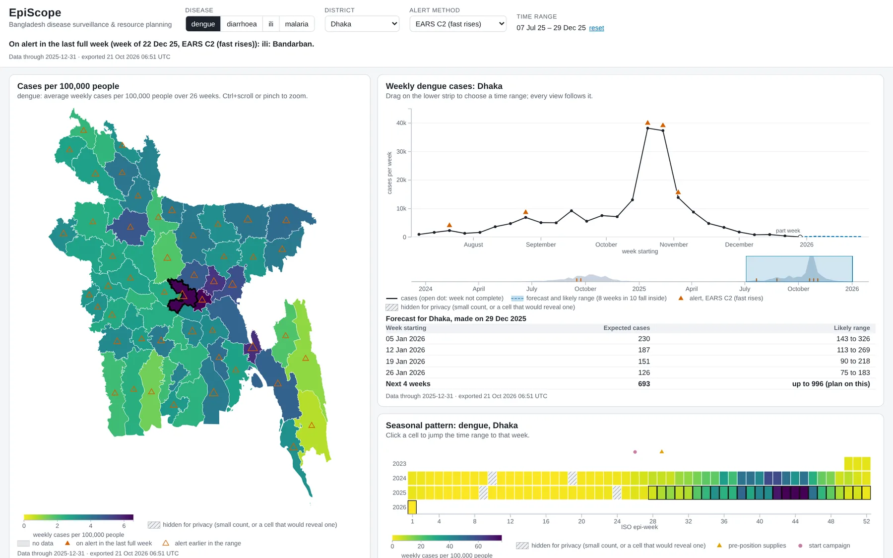
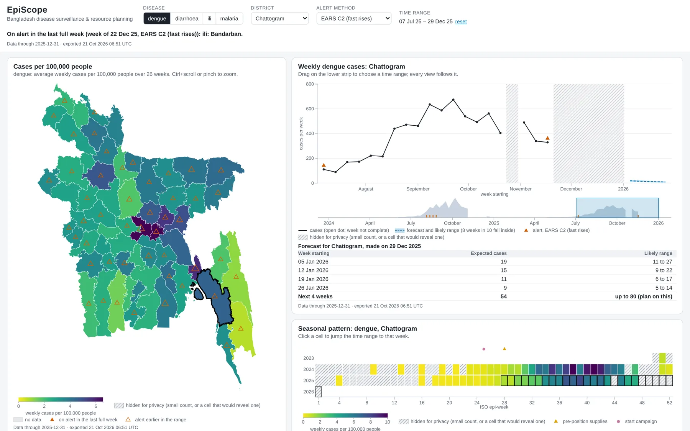
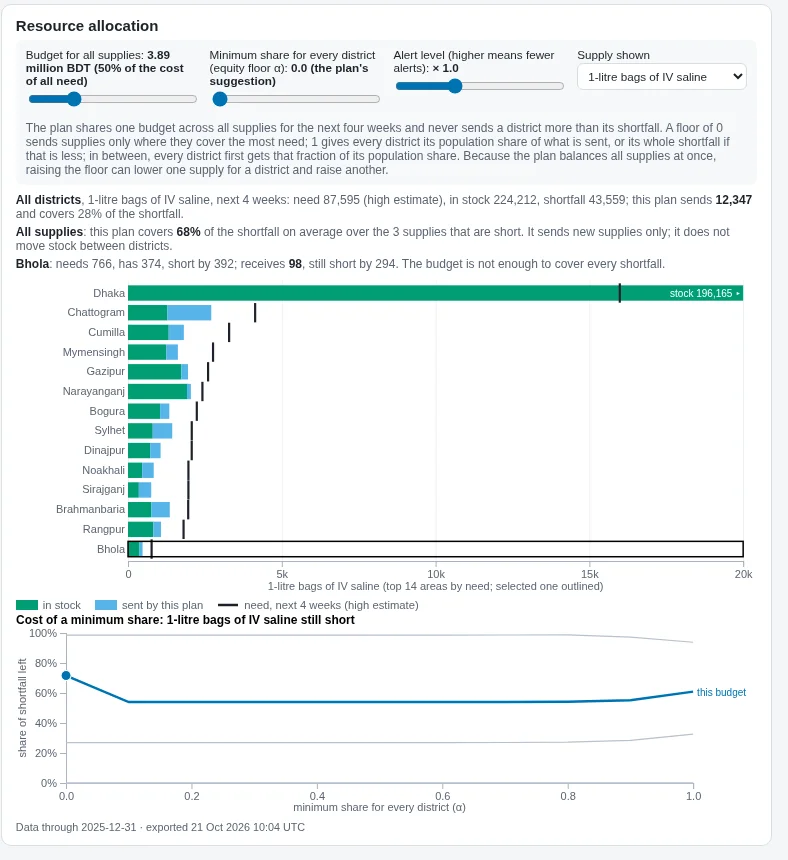
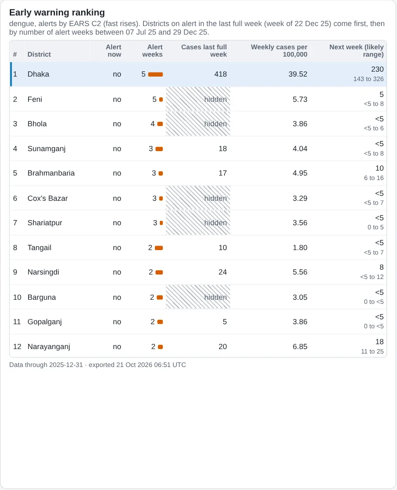

CSE 4345 Big Data Analytics, Premier University, Chittagong
EpiScope
Catching outbreaks early in Bangladesh, and planning supplies before the season peaks.
Meet our team
Four people, one pipeline. Each of us presents one part of it.
Late, messy reports from 64 districts
Dengue, diarrhoea, flu-like illness and malaria. Reports arrive late, facilities go quiet, and the same patient appears twice.
Warn early
An alert when cases rise more than the season explains.
Forecast
Cases and hospital demand, one to four weeks ahead, with a range.
Allocate
Split a fixed national stock of supplies across districts.
Prepare
A calendar of when to stock up and when to start campaigns.
The people using it are not data scientists. Every output has to explain itself.
Conflict 1: early alerts or few false alarms
District health officer
"Tell me the moment cases go up. A missed outbreak costs lives."
Epidemiologist
"If the alarm rings every week, nobody answers it."
We sweep the alert threshold against planted outbreaks and pick the point in the open.
Four more trade-offs
| Conflict | What we chose |
|---|---|
| Detail or privacy | District and week only; counts of 1 to 4 hidden, with a second cell hidden where a total would reveal them |
| Efficiency or equity | One number, the equity floor α, decides how much goes by population |
| Speed or cost | A daily batch that can be re-run safely; allocation is a weekly decision |
| Accuracy or clarity | A readable count model, tested against a simple baseline |
Real places and weather, synthetic patients
Real: district borders and 2022 census population (BBS and OCHA via HDX), daily weather from the Open-Meteo archive.
Synthetic: every patient, facility and stock record, made by our generator. No real patient data anywhere.
Dengue follows rain by a few weeks and peaks in autumn, matching OpenDengue.
Planted outbreaks the detector never sees
Found by EARS C2: 33. Found by CUSUM: 32.
Source: docs/FINAL-NUMBERS.md (detection_tradeoff.json), final SF=1 build, seed 42
One pipeline, each layer rebuilt from the last
The generator plants the problems we must catch
Patients are fake, but seasons, climate and population are real.
Defects are injected on purpose, so the pipeline can prove it catches each one.
Two facilities each go silent for three weeks, then back-fill everything at once.
Injected defect rates, from generator/config.py
Bronze: keep what arrived, load it once
No date or file name is written in the code. That is why an unseen test drop loads with no changes.
Code: pipeline/bronze/ingest.py
Silver: rules decide what we trust
14 rules for encounters, 7 each for facilities and stock.
A failing row is never deleted. It goes to quarantine with every reason code it broke.
rows quarantined at SF=1
of 34,136,930 encounter rows
Share of rows failing each rule, first load
Counts: docs/FINAL-NUMBERS.md (sf1_final_run.json). Rule chart: dashboard/data/dq.json, SF=0.25 build of 21 Oct.
No patient ID past bronze; one rule for late data
patient_key = HMAC-SHA256(key, patient_id)
Built from Spark's own sha2, so no Python UDF slows it down.
The secret key lives in .env (EPISCOPE_HASH_SALT), outside Git. Clean rows keep only an age band.
Code: pipeline/privacy/deid.py, pipeline/silver/build.py
Gold counts by onset week, so a back-fill is not a spike
Illustration: one facility, silent for 3 weeks
Gold rebuilds only the weeks a batch touched.
Every gold row carries the bronze batch IDs it came from, so any number on the dashboard traces back to its files.
Code: pipeline/gold/build.py (replaceWhere on changed weeks)
New drop, re-run, quarantine
git describe --tagsshows v1.0make dropwith a new seed: 14 new daysmake bronze silver gold analytics serve- Run again: nothing new, duplicates = 0
- One quarantined row:
DQ_ORPHAN_FACILITY - A gold row's batch IDs in the ingest log
Hidden-drop drill on the final ingestion code
| Drop seed | 4675 |
| Rows added to silver | +8,888 |
| Duplicates after re-run | 0 |
| Export | 9.76 MB |
| Whole drill | 28.6 min, pass |
Clean clone, SF=0.05. Source: docs/FINAL-NUMBERS.md (hidden_drop_drill.json).
Spark choices, and the 45-minute target
- Broadcast joins for small tables (facilities, districts): joining them never shuffles the encounter table.
- Adaptive query execution on.
- Partition by year only: finer keys would mean thousands of tiny files.
- Daily batch for forecasts and allocation: they are weekly decisions.
| Scale factor | Runtime |
|---|---|
| 0.25 | 15.4 min |
| 0.5 | 20.4 min |
| 1 (limit 45 min) | 28.3 min, pass |
| 1, final code | 25.0 min |
Silver: rules checked once, 325 s to 214 s Spark time at SF=0.25, outputs identical.
Backtest: 1 task to 64, 325 s to 165 s. Source: docs/FINAL-NUMBERS.md.
Two detectors on seasonally adjusted counts
EARS C2: this week against weeks 3 to 9 back. Alarm when z > 4.0.
z = (y − s·m) / σ
CUSUM: S = max(0, S + z − 0.5), alarm when S > 6.5. It adds up small, steady excess.
Farrington needs about five years before its first test week. That is all the history we have.

Real output: weekly dengue in Dhaka, triangles are EARS C2 alerts at threshold 4.0 (final SF=1 build).
A silent facility is missing data, not zero cases
Illustration
Completeness = reporting facilities ÷ expected.
Below 80%: the week is missing. Above it: the count is scaled up by 1 ÷ completeness.
Together with onset-week counting in gold, the back-fill spike never reaches the detector.
Code: analytics/detection/prepare.py; both planted silent facilities listed in ground_truth/artefacts.csv
A count model a manager can read
log μ = season + rain(4–8 wk ago) + temp(4–8 wk ago) + recent level
Negative binomial, one per district, for dengue and diarrhoea (malaria too, for antimalarial demand), horizons 1 to 4 weeks.
Backtest: 52 rolling origins. At each one the model sees only earlier weeks, as finally reported.
| Against seasonal naive | Result |
|---|---|
| MAE (model vs naive) | 113 vs 133 |
| 80% interval coverage | 0.79 vs 0.77 |
| Relative WIS (< 1 wins) | 0.84 |
| dengue / diarrhoea | 0.89 / 0.72 |
Source: docs/FINAL-NUMBERS.md (backtest_metrics.csv).
Picking the threshold against planted outbreaks
Sweep the threshold. For each value: outbreaks caught, false alerts per district-year, days to detection.
Chosen points: EARS C2 threshold 4.0; CUSUM k 0.5, h 6.5.
| Method | Caught | False / district-yr | Median days | PPV |
|---|---|---|---|---|
| EARS C2 | 33 of 35 (0.94) | 1.89 | 8 | 0.15 |
| CUSUM | 32 of 35 (0.91) | 1.82 | 9.5 | 0.25 |
EARS C2 catches 91% within 14 days. Source: docs/FINAL-NUMBERS.md (detection_tradeoff.json).
From cases to supplies to a plan
minimise weighted unmet need
budget, transport per division
xd ≥ min(α · pd · Σx, needd)
xd ≤ needd
pd: population share; Σx: total sent.
Solved with PuLP and CBC. Every rate lives in one file with its source.
Code: analytics/forecast/demand_assumptions.py, analytics/optimise/lp.py
The price of fairness
At half the budget: 67.8% of need met, against 34.4% for a population split.
Spread across all 64 districts: top-5 share 0.22, Gini 0.27 (SF=0.25; before the fix: 1.00 and 0.98).
A floor of α 0.1 to 0.9 costs 2.3 to 2.4 points (65.3 to 65.5%); α 1 costs 1.5. No district gets more than it needs.
Recommended α = 0: of the floors costing ≤ 2 points (α 0 and 1), it gives the worst-off district most (0.46 vs 0.38).
Green: our plan at every budget (front to back: 0.25 to 1.5 × full need) and every α (left to right: 0 to 1). Red: population split.
Source: docs/FINAL-NUMBERS.md (allocation_summary.json, allocation_diagnosis.md); curve from allocation_curve.csv.
Dengue calendar by division
Source: docs/experiments/calendar_summary.csv (STL per division, 5 years). Rule: stock 3 weeks and campaign 6 weeks before onset.
Built for a district office laptop
- D3 v7 only, no other chart library.
- Reads small gold summaries, under 10 MB. Never a patient row.
- Every panel says how fresh its data is.
- Viridis for cases, vermillion for alerts: colour-blind safe.
- Phone: views stack in one column.

One selection, five views
- The map shows cases per 100,000; triangles are alerts
- Solid triangle: on alert in the last full week; outline: earlier in the range
- The table ranks districts by alerts
- Click a district: weekly chart, heatmap and allocation follow

Ranges, hidden counts and the what-if panel
- Drag the time strip: every view follows
- Open dot: newest week, not yet complete
- Blue band: 80% forecast range; table below
- Striped cells: counts 1–4, hidden
- What-if: move budget and α; the plan comes from a grid solved in advance
?district=: own district in full, rest as division totals

Final SF=1 build, allocation capped at need.
Simulated persona walkthroughs run with AI agents
Three AI agents, each briefed as a non-technical persona, tried five tasks each on the real dashboard. Not a test with real people.
Personas: a district officer in Cox's Bazar, a hospital store-keeper in Chattogram, a senior ministry official.
Run on an SF=1 build of 21 October, before the allocation cap.
| Round 1 | 0 of 15 tasks done |
| Round 2, after fixes | 13 of 15 |
| Problems found | 48 |
| Fixed / partly / not | 26 / 20 / 2 |
Source: docs/FINAL-NUMBERS.md (docs/usability/).
Privacy by design, and a limit of the equity floor
- Keyed hash for patient IDs; age in bands.
- Counts 1 to 4 hidden, with complementary suppression so totals cannot reveal them.
- k-anonymity checker for record-level extracts; published tables are aggregates.
- Equity floor: a population share, never more than need. No need shown, nothing sent, so it cannot protect a district whose reports are missing. Silent weeks are marked missing, not zero.

Hatched cells: suppressed counts 1–4.
k-anonymity checker: pipeline/privacy/kanon.py, unit-tested; not a pipeline step.
What we would tell the Ministry
- Dengue supplies in place by week 28-29 (6-13 July), before the season.
- Treat alerts as a short list; check reporting completeness before acting.
- Choose α openly, knowing what it costs.
Limits
- Synthetic data: no real decision yet.
- Streaming alerts take 219.2 s at full scale: fast, not instant.
- Forecast bands ignore parameter uncertainty, so they are a little narrow.
Thank you
Everything shown matches tag in our repository.
EpiScope: early warning, forecasts and supply planning for Bangladesh's 64 districts.